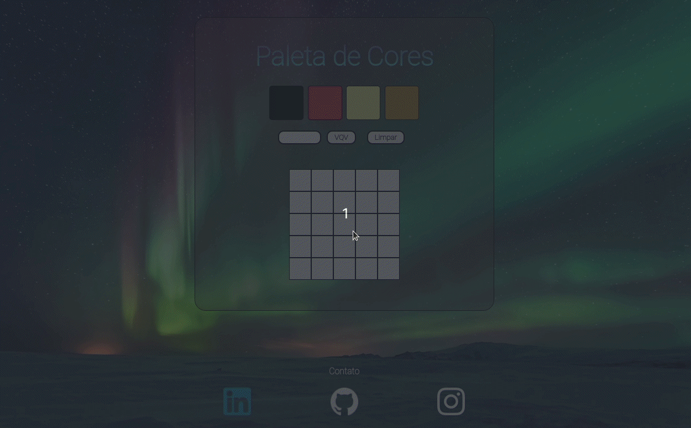

Portfolio
Lessons Learned
- Objetivo: Criar um site que contenha uma série de informações sobre o que aprendi na Trybe ao longo dos primeiros três blocos.
- Bloco 03: Introdução à HTML e CSS
- Tecnologias envolvidas: HTML e CSS;
- Data de criação: março/22
Pixels art
- Objetivo: Criar uma paleta de cores funcionais
- Bloco 05: JavaScript: DOM, Eventos e Web Storage
- Tecnologias envolvidas: HTML, CSS e JavaScript.
- Data de criação: março/22